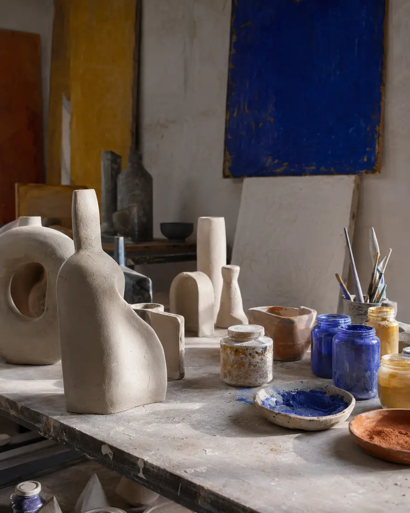

ARTWEY / EDITION 01
L’art ne se regarde pas
de loin.
ArtWey relie les œuvres aux artistes, aux lieux, aux mouvements et aux histoires qui leur donnent une présence. L’art vivant, sans frontières de langue.
Explorer l’édition →01ART
IN CONTEXT
IN CONTEXT
ARTWEY LIVE EDITIONArtists · Works · Exhibitions · Museums · HeritageFR · EN · ES · AR · DE · +
THE CONTINUOUS EDITION
Art Now
Les artistes, les expositions, les collections et les idées qui font bouger le monde de l’art. Un flux visuel, relié à ce qui compte vraiment.
Ce que les expositions révèlent d’une époque.
Explorer →Quand une collection devient un récit vivant.
Explorer →Créer, montrer, transmettre, collectionner.
Explorer →
ARTISTS / MATERIAL / PROCESSARTISTS AT WORK
Avant l’œuvre, il y a la main, le temps et la matière.
ArtWey ne montre pas seulement le résultat. Il ouvre l’atelier : peinture, photographie, céramique, sculpture, textile, image numérique et toutes les pratiques qui déplacent le regard.
Rencontrer les artistes →WHERE ART MEETS PEOPLE
Les Expositions
Musées, galeries, foires, biennales, fondations et lieux indépendants : l’agenda mondial n’est pas une liste. Chaque exposition est reliée aux artistes, œuvres et débats qu’elle met en mouvement.
Expositions à voir maintenant
Une carte mondiale des rendez-vous, enrichie par des dossiers, visites et vidéos.
Voir l’agenda →Les grands moments du monde de l’art
Quand artistes, galeries, collectionneurs et institutions se rencontrent.
Suivre les événements →Ce qui reste après la visite
Œuvres, accrochage, contexte, idées, échos et archives de l’exposition.
Lire les notes →ART HISTORY / LIVING ARCHIVE
Le passé de l’art
continue de créer.
Les grands mouvements, les œuvres, les ateliers et les collections ne sont pas des chapitres terminés. Ils éclairent encore les artistes d’aujourd’hui.
Entrer dans les archives vivantes →Artists Vies, gestes, trajectoiresMovements Ruptures, influences, héritagesWorks Une œuvre, ses matériaux, sa présencePlaces Musées, ateliers, villes et collections
THE REFERENCE LIBRARY
Les Dossiers
Un artiste, une œuvre, un mouvement, une collection ou une question de provenance : des pages faites pour grandir avec le temps, pas pour disparaître après une actualité.
01 / ARTISTS
Voix, pratiques, œuvres, ateliers et trajectoires.
Explorer →02 / MOVEMENTSDe l’art ancien aux formes les plus contemporaines.
Explorer →03 / MUSEUMS & COLLECTIONSLes lieux qui conservent, exposent et réinventent le patrimoine.
Explorer →04 / ART MARKETGaleries, foires, ventes, collectionneurs et circulation des œuvres.
Explorer →ARTWEY STUDIO
Voir l’art
autrement.
Visites, ateliers, installations, restaurations et entretiens : l’image en mouvement donne un autre accès aux œuvres et à ceux qui les font.